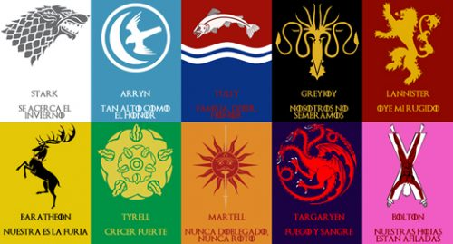

La serie está ambientada en los continentes ficticios de Poniente y Essos, y recorre distintos arcos narrativos en los cuales participan un gran número de personajes. Su primer arco narrativo se centra en las violentas luchas dinásticas entre varias familias nobles por el control del Trono de Hierro del continente de Poniente y sus Siete Reinos; el segundo abarca los intentos de recuperar el mismo Trono por parte de los herederos de la antigua dinastía gobernante, la casa Targaryen, quienes fueron exiliados a Essos ; la tercera crónica es la creciente amenaza del invierno, las criaturas legendarias y pueblos feroces que habitan más allá del Muro que separa a los Siete Reinos de Poniente de las gélidas tierras del Norte, donde no se había establecido ningún tipo de gobierno. Está filmada en los estudios Titanic Studios en Belfast (Irlanda del Norte), Estados Unidos, Croacia, Islandia, Malta, Marruecos, Escocia y España; lugares que recrean los paisajes de la trama.
La primera temporada de la serie fue estrenada el 17 de abril de 2011 en Estados Unidos, el 8 de mayo en Hispanoamérica y un día después en España, desarrollándose a partir de entonces una temporada por año de 10 capítulos cada una hasta el estreno de su sexta temporada, que terminó de emitirse el 26 de junio de 2016. La séptima temporada se estrenó el 16 de julio de 2017 y contó con siete capítulos, al igual que la octava y última temporada de la serie, que se estrenará en 2019.
En 2014 se convirtió en la serie más vista en la historia de HBO, cuando el estreno mundial de la cuarta temporada superó el récord de audiencia del capítulo final de Los Soprano.123 Juego de tronos rompió su propio récord de audiencia en episodios posteriores, a pesar de haber sido nombrada la serie más pirateada del mundo por la revista Guiness.
